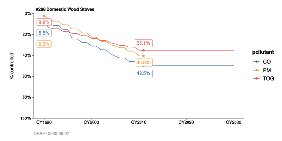
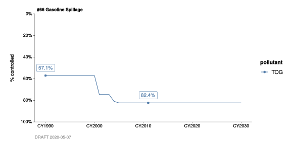

8 Control Factors
This chapter is very similar to the one on Emission factors. Here we employ a function, annualize_DB_control_factors(), that’s analogous to annualize_DB_emission_factors().
There is one notable difference. For a given category, emission factors can vary by quite a bit from pollutant to pollutant. The default behavior for chart_annual_emission_factors_by(), as we saw in the previous chapter, is therefore to generate a different sub-plot for each pollutant, so that the y-scales can vary by pollutant. Control factors, in contrast, always range from 0% to 100%, so we can safely plot them all on the same y-scale. This works well when we set color = pol_abbr, as we do in the examples below.
8.1 Example: domestic woodstoves
#
# Using `filter_categories()` before `annualize_DB_control_factors()` saves time.
#
BY2011_woodstove_cf_data <-
BY(2011) %>%
DB_control_factors(
verbose = TRUE) %>%
filter_categories(
"#288 Domestic Wood Stoves" = 288) %>%
annualize_DB_control_factors(
years = CY(1990:2030),
verbose = TRUE) #
# We can see that in CY1990, these emissions were already controlled by a small
# amount. By CY2011, controls had increased by quite a bit.
#
BY2011_woodstove_cf_data %>%
filter_pollutants(
"CO",
"PM",
"TOG") %>%
chart_annual_control_factors_by(
color = pollutant,
flag_years = CY(1990, 2011))
8.2 Example: gasoline filling stations
#
# Using `filter_categories()` before `annualize_DB_control_factors()` saves time.
#
BY2011_gasoline_spillage_cf_data <-
BY(2011) %>%
DB_control_factors(
verbose = TRUE) %>%
filter_categories(
"#66 Gasoline Spillage" = 66) %>%
annualize_DB_control_factors(
years = CY(1990:2030),
verbose = TRUE) #
# Again we can see that in CY1990, these emissions were already controlled by a
# small amount. And, by CY2011, controls had increased by quite a bit.
#
BY2011_gasoline_spillage_cf_data %>%
filter_pollutants(
"TOG") %>%
chart_annual_control_factors_by(
color = pollutant,
flag_years = CY(1990, 2011))
8.3 Control effectiveness vs. annualized control factors
“Control factors” can mean several different things. Above, we looked at control factors in terms of annualized uncontrolled fractions.
Historically, BAAQMD emission inventory staff have estimated both (a) the “maximum effectiveness of” a given regulation, and (b) the real-world “compliance with” said regulation. Sometimes these are tied to mid-year dates, rathen than January 1. Staff have then relied on an algorithm, implemented in DataBank, to transform these into cumulative and annualized control factors.
Those underlying “maximum effectiveness” and “compliance” estimates can be inspected by just avoiding the invocation of annualize_DB_control_factors().
Let’s dig a little further into the “gasoline spillage” example above:
#
# Here we are simply omitting the lines:
#
# annualize_DB_control_factors(
# years = CY(1990:2030),
# verbose = TRUE)
#
# ... in other words, we're omitting the last step in the pipeline above.
#
BY(2011) %>%
DB_control_factors(
verbose = TRUE) %>%
filter_categories(
"#66 Gasoline Spillage" = 66)| cat_id | pol_id | pol_abbr | Cd | Ed | Ep | cf_date | cf_desc | reg_id | reg_abbr | reg_name | category |
|---|---|---|---|---|---|---|---|---|---|---|---|
| 66 | 990 | TOG | 0.8 | 0.60 | 0.0 | 1981-09-28 | No rule is applicable for this category. Add reg. control/rule effect. due to nozzle improvement in Phase II GDF; 80% reg. control. | 41 | R8.7.302 | Gasoline Dispensing Facilities | #66 Gasoline Spillage |
| 66 | 990 | TOG | 0.8 | 0.86 | 0.6 | 1986-07-26 | Nozzle improvement in Phase II GDF reduce the gasoline spillage at vehicles filling stations; 80% reg. control, 86% compliance. | 41 | R8.7.302 | Gasoline Dispensing Facilities | #66 Gasoline Spillage |
| 66 | 990 | TOG | 0.5 | 0.50 | 0.0 | 2001-04-01 | CARB lowering the allowable spillage limit 0.24/1000gal, Module 5 effect. date | 41 | R8.7.302 | Gasoline Dispensing Facilities | #66 Gasoline Spillage |
| 66 | 990 | TOG | 0.5 | 0.87 | 0.5 | 2004-04-01 | CARB lowering the allowable spillage limit 0.24/1000gal, Module 5 operative date | 41 | R8.7.302 | Gasoline Dispensing Facilities | #66 Gasoline Spillage |
See the Appendix for further discussion of DB_control_factors() (and control factors more generally).